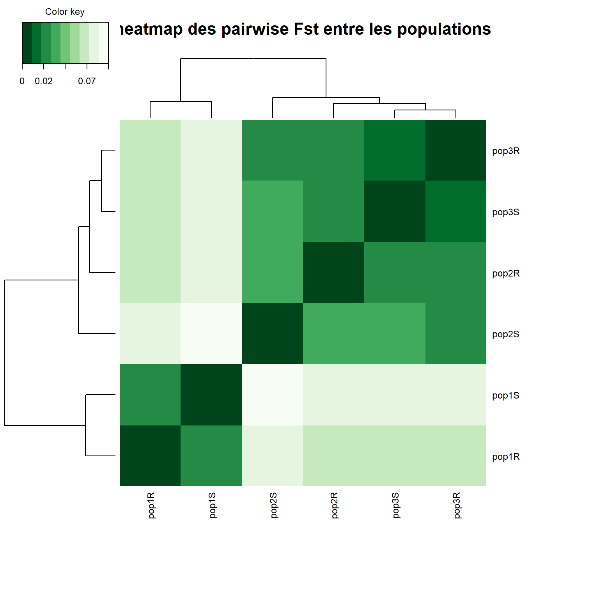

Filtrage des données brutes
Le fichier vcf, éventuellement compressé, est téléchargé sur un ordinateur local pour être analysé sous Rstudio. Dans un premier temps il faut charger les packages nécessaires et définir les chemins des différents dossiers qui seront utilisés (Chunk 1)
Chunk 1 Chargement des packages et chemins
library(poolfstat) #filtrage du vcf et création des fichiers d'entrées BayPass
library(RColorBrewer) #gestion couleur des heatmaps
library(mixOmics) #"cim" pour heatmap
library(corrplot) #matrice de corrélation pour heat map
library(VennDiagram) #création de diagramme de Venn
library(tidyverse) #manipulation de données (dplyr) et plots (ggplot2)
#définition des chemins de travail
path_vcf <- "/../vcf/"
path_input <- "/../Input/"
path_out <- "/../Output/"
path_res <- "/../Resultats/"
source("/../baypass_utils.R") #fonctions utilitaires de BayPassLe filtrage du vcf et la sélection des SNPs à analyser ce fait à l’aide du package PoolFstat (Chunk 2). Dans un premier temps il faut renseigner les noms des populations dans un objet pnames et les tailles haploïdes de chaque population dans un objet psizes. Pour les organismes diploïdes, le nombre total de copies des autosomes sera deux fois le nombre d’individus dans le pool, pour les gonosomes Y ou W la ploïdie sera égale au nombre d’individus XY/ZW et pour les gonosomes X ou Z le calcul sera (nombre de XX/ZZ * 2) + (nombre de XY/ZW * 1). La fonction vcf2poodata va balayer le fichier vcf, sélectionner les SNP bi-alléliques selon des critères définis par l’utilisateur et créer un objet pooldata.
Chunk 2 Filtrage et sélection des SNPs
Les options à renseigner sont:
min.cov.per.pool = Si au moins un pool n’est pas couvert par au moins au moins min.cov.perpool reads, le SNP est rejeté.
max.cov.per.pool = Si au moins un pool est couvert par plus de que max.cov.perpool reads, le SNP est rejeté.
min.maf = fréquence allélique minimale autorisée pour l’allèle minoritaire pour qu’un SNP soit retenu.
#Infos sur les pops
pnames <- c("pop1S", "pop2S", "pop3S", "pop1R", "pop2R", "pop3R")
psizes_A <- c('114', '180', '160', '180', '200', '120') #ploydie autosome
psizes_X <- c('86', '135', '120', '135', '150', '90') #ploydie X/Z
psizes_Y <- c('28', '45', '40', '45', '50', '30') #ploydie Y/W
#conversion du .vcf
pooldata <- vcf2pooldata(vcf.file = paste(path_vcf, "test_data.vcf.gz", sep=""),
poolsizes = psizes_A,
poolnames = pnames,
min.cov.per.pool = 4,
max.cov.per.pool = 1e+06,
min.maf = 0.05,
remove.indels = FALSE,
nlines.per.readblock = 1e+06)## Reading Header lines
## VarScan like format detected for allele count data:
## the AD field contains allele depth
## for the alternate allele and RD field for the reference allele
## (N.B., positions with more than one alternate allele will be ignored)
## Parsing allele counts
## 1e+06 lines processed in 0 h 0 m 18 s : 577119 SNPs found
## 1810324 lines processed in 0 h 0 m 31 s : 1066980 SNPs found
## Data consists of 1066980 SNPs for 6 Pools#élimine le 1% supérieur considéré comme trop fortement couvert
#(région très dupliquée, biais de séquençage...)
pooldata<-pooldata.subset(pooldata, cov.qthres.per.pool = c(0,0.99))## Data consists of 1041408 SNPs for 6 PoolsA ce stade cet objet pooldata peut être utilisé pour calculer diverses statistiques utilisées dans les études de génomique des populations, ces outils sont décrits et exemplifiés dans la vignette de poolfstat : (https://cran.r-project.org/web/packages/poolfstat/vignettes/vignette.pdf), parmis ceux-ci on trouve l’analyse des Fst entre les populations deux à deux (pairwise) afin de visualiser la proximité génétique entre populations(Chunk 3).
Chunk 3 Pairwise Fst
#Calcul des pairwise Fst
PairWise.fst <- compute.pairwiseFST(pooldata,
method = "Anova",
min.cov.per.pool = 4,
max.cov.per.pool = 1e+06,
min.maf = 0.05,
output.snp.values = FALSE,
verbose = FALSE)##
## Overall Analysis Time: 0 h 0 m 5 s#conversion en matrice de distance
df <- as.matrix(dist(t(PairWise.fst@PairwiseFSTmatrix)))
#heatmap
cim_color <- colorRampPalette(rev(brewer.pal(9, "Greens")))(9)
cim(df, color = cim_color, symkey = FALSE, margins = c(10, 10), title = "heatmap des pairwise Fst entre les populations")
un exemple d’estimation de la structure génétique des populations déduite des Fst est donné en Annexe 1